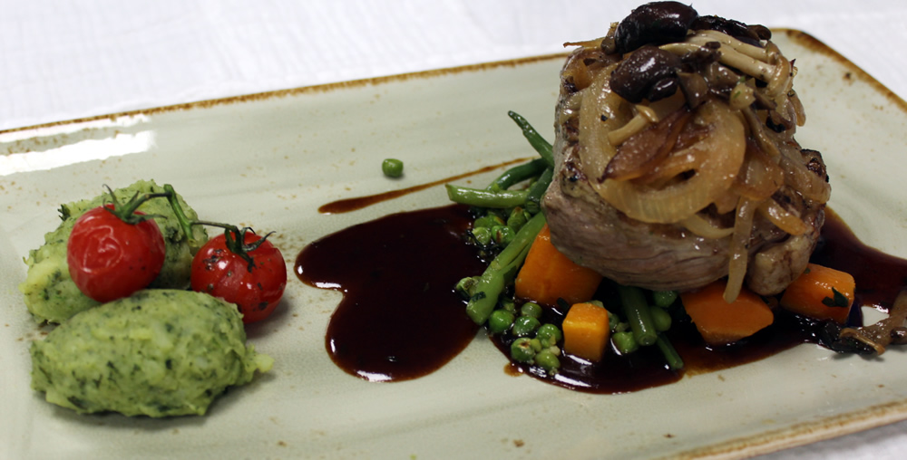
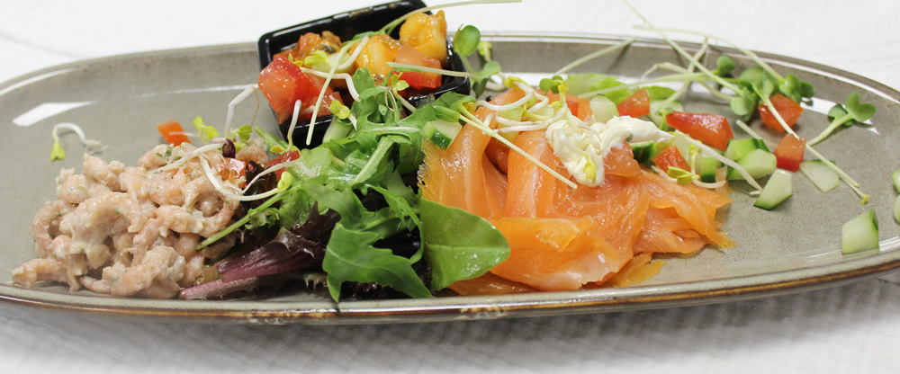
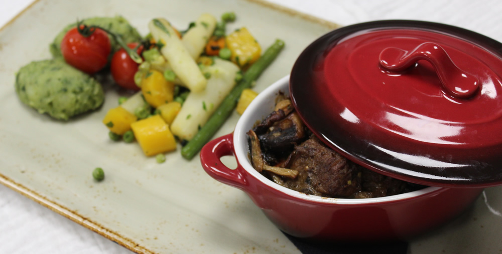
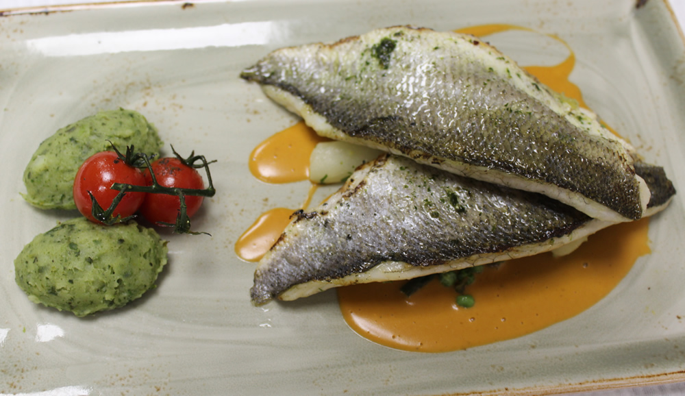
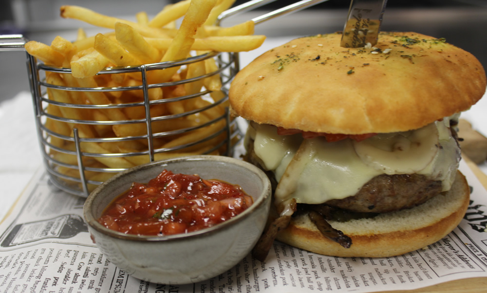
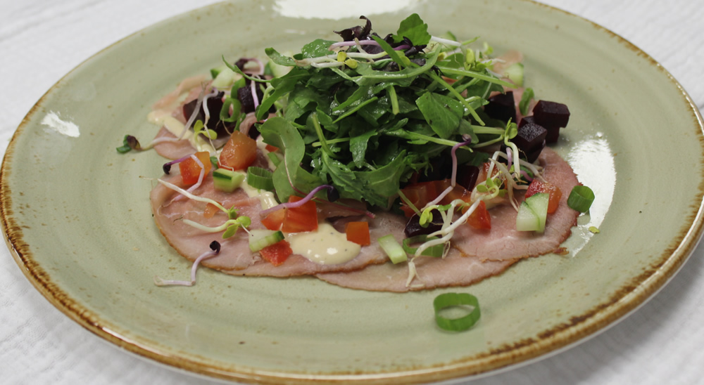
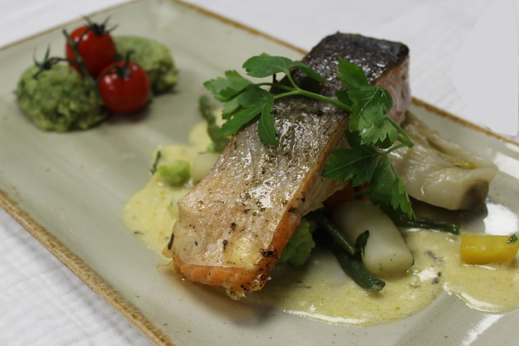
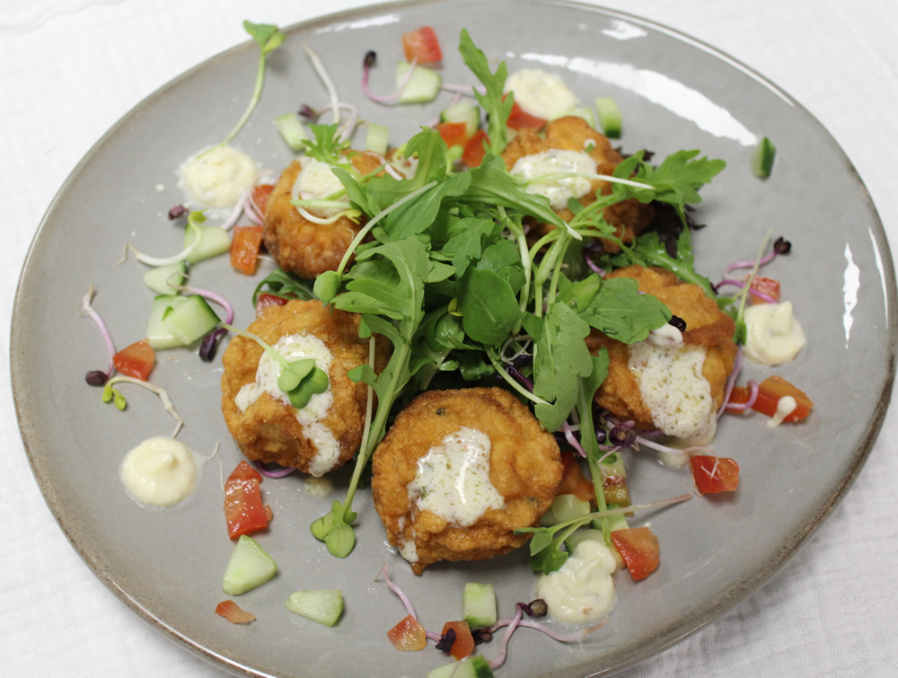

Wildmenu
Vanaf 3 oktober 2026
Hertencarpaccio of huisgerookte wilde eend, hertenbiefstuk op hertengoulash met rode kool en stoofpeer, en pistache-ijsparfait.
Driegangenmenu € 65,00
Bekijk het wildmenuDorpsstraat 23, Elst
Voor de één een beleving, voor de ander een gewoonte. Het horeca-boegbeeld van Elst is opnieuw geopend voor u als gast.
Dagelijks open vanaf 11.00
zo t/m do tot 00.00
vr en za tot 01.00
dinerkeuken tot 21.30
De Vereniging in Elst is voor velen een begrip. Voor de één een beleving, voor de ander een gewoonte. We hebben getracht om het grand café restaurant zo aantrekkelijk en sfeervol mogelijk te maken, zodat het voor iedereen goed aanvoelt.
Of u nu uitgebreid komt dineren of gewoon een drankje en een hapje komt doen, binnen of op het terras: het gevoel moet ontspannen en zorgeloos zijn. Voor het diner is de keuken open tot 21.30 uur, maar u kunt tot in de late uurtjes nog genieten van een drankje en een borrelhapje.
Wij hopen u binnenkort te ontmoeten.
Team De Vereniging








Vanaf 3 oktober 2026
Hertencarpaccio of huisgerookte wilde eend, hertenbiefstuk op hertengoulash met rode kool en stoofpeer, en pistache-ijsparfait.
Driegangenmenu € 65,00
Bekijk het wildmenuKerstmenu
Gerookte paling of hertencarpaccio, een consommé of spoom, heilbot, wildcreatie of tournedos, en zoete zaligheden tot besluit.
Viergangenmenu € 85,50
Bekijk het kerstmenuVoor het diner reserveert u eenvoudig online. Let op: de reservering is pas definitief wanneer u van ons een tweede mail met een bevestiging ontvangt.
Liever even bellen? 0481 78 55 52
Honden zijn van harte welkom op het terras; binnen in het restaurant zijn ze niet toegestaan.
Je komt terecht in een jong, gezellig team dat van aanpakken weet. Het restaurant telt 120 zitplaatsen en het terras zo'n 70, en we zijn elke dag open voor lunch en diner. Stuur je cv en motivatie naar info@deverenigingelst.nl.
Je ontvangt de gasten, neemt bestellingen op, serveert onze mooie gerechten uit en maakt drankjes achter de bar voor de bedieningsmedewerkers. Enige ervaring in de bediening is een vereiste. Werkrooster in overleg.
Achter de schermen ben jij een onmisbare schakel: jij zorgt dat servies, glazen, bestek en keukengerei schoon en op tijd klaarstaan, zodat keuken en bediening optimaal blijven draaien.
We zoeken iemand die graag de handen uit de mouwen steekt, enthousiast, gemotiveerd en betrouwbaar is, netjes en hygiënisch werkt, goed samenwerkt maar ook zelfstandig taken oppakt, en flexibel inzetbaar is. Ervaring is mooi meegenomen, maar niet noodzakelijk.
Wij bieden een functie voor 32 uur per week in een prettige, gezellige werkomgeving met een enthousiast en betrokken team.
Bij De Vereniging draait alles om gastvrijheid, sfeer en mensen samenbrengen. Als gastheer of gastvrouw en bedrijfsleider ben je het gezicht van De Vereniging: je zorgt dat alles op rolletjes loopt en dat gasten zich welkom voelen.
Je bent sociaal, klantgericht en communicatief vaardig, kunt goed organiseren en plannen, neemt initiatief, motiveert collega's en houdt overzicht als het druk is. Ervaring in de horeca of een leidinggevende functie is een pré.
Wij bieden een afwisselende functie voor 38 uur per week, werktijden in overleg, ruimte voor eigen ideeën, korte lijnen en arbeidsvoorwaarden die we in overleg bespreken.
0481 78 55 52
info@deverenigingelst.nl
| Zondag t/m donderdag | 11.00 – 00.00 |
|---|---|
| Vrijdag en zaterdag | 11.00 – 01.00 |
| Dinerkeuken | tot 21.30 |